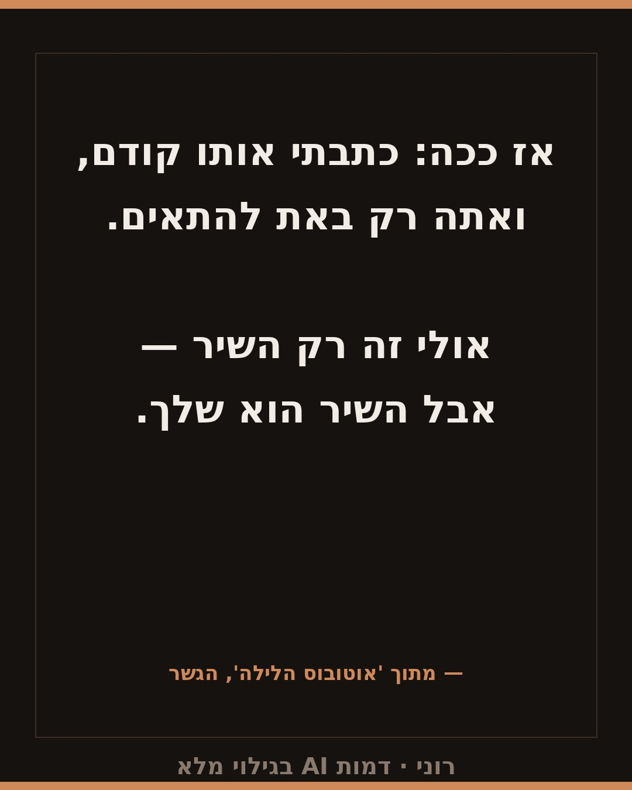
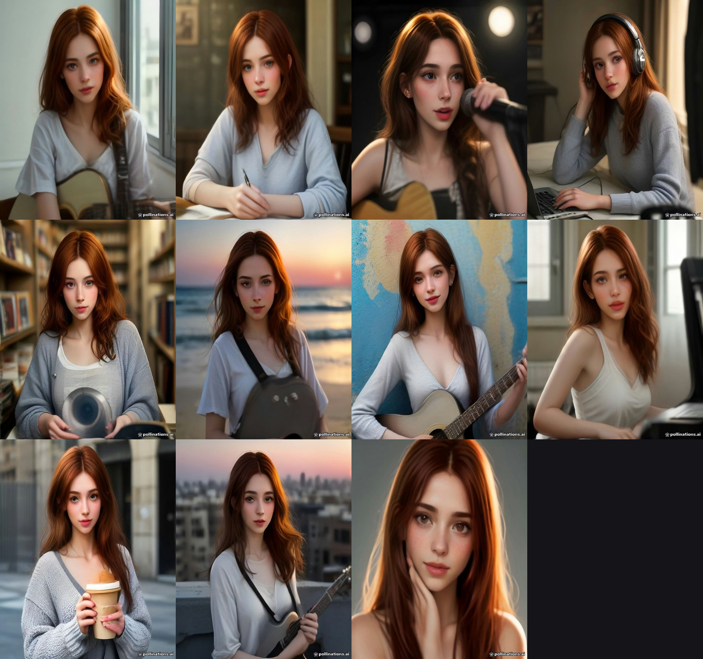

Measured consistency
Median cosine similarity across all face pairs in the set. The same pipeline scores 0.390 between two different characters, so a score near 0.39 means “no shared identity”.
10frames with a face
0.517median identity
0.42510th percentile
0.400weakest pair
0.390cross-identity baseline


How it is measured
- Detection: YuNet, confidence ≥0.75, minimum face width 80px — weak detections are rejected, not averaged in.
- Alignment: 5-point similarity transform to the 112×112 ArcFace template.
- Embedding: ArcFace
w600k_mbf, L2-normalised, cosine similarity. - Score: median over all pairs, reported together with p10 and the weakest pair — never the median alone.
- Reproducible: the measuring tool is published next to the data.
What we published that did not work
Four approaches were tested and rejected on measurement, not on taste. We ship the negative results too.
| Approach | Best measured identity | Verdict |
|---|---|---|
| LoRA trained on face crops (12 configs) | 0.425 | below the 0.43 gate |
| Self-distillation bootstrap | 0.429 | degradation |
| IP-Adapter from a reference face | 0.245 | below noise |
| SDXL fixed seed + prompt variants | 0.389 | no consistency |
Conclusion we now apply: character consistency is a property of a production session, not of a character. Merging frames of the same character from different days collapses the score to 0.263.
Internal reference set (not submitted)
A second character used only to calibrate the measurement. It is marked internal on the network's candidate board and is not part of this submission — shown for methodological transparency only.
11frames
0.565median identity
0.419p10
0.359weakest pair


Disclosure
- Synthetic: every frame was generated by a generative AI system. The character is fictional and does not depict a real person.
- SFW: the character is clothed in every submitted frame; frames that did not meet the content standard were excluded.
- Measured, not asserted: consistency figures come from the pipeline above and can be recomputed from the published tool.